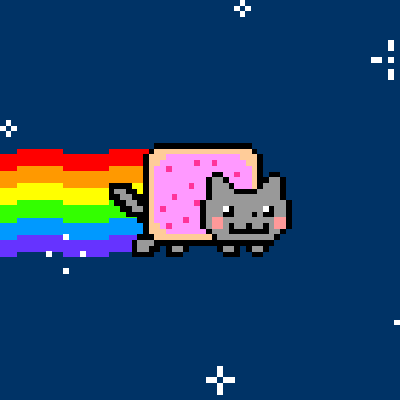

The Pop Tart Cat animation was posted on the daily comics site LOL-COMICS run by illustrator Chris Torres, also known as prguitarman, on April 2nd, 2011.
The original drawing was based on his own Russian Blue cat, Marty, and was drawn after receiving two separate suggestions for a cat and a pop tart during a
Red Cross charity drawing event on Livestream. Prior to the Pop Tart Cat, prguitarman had already gained a relatively large audience with a few other instances
of comics circulating on the web. The GIF animation was also reblogged via Tumblr on April 2nd, 2011, accumulating over 3,000 notes (likes & reblogs) in its first two weeks:

On April 5th, 2011, YouTuber saraj00n posted a video titled Nyan Cat, using comic artist prguitarman’s Pop Tart Cat animation set to the well-known Japanese Vocaloid
song Nyanyanyanyanyanyanya by Japanese artist Daniwell-P looping in the background, Although the song had been originally composed for Hatsune Miku to sing, The version used
in the video was of the cover sung by the Utauloid Momo Momone. The video gained over one million views in its first two weeks: